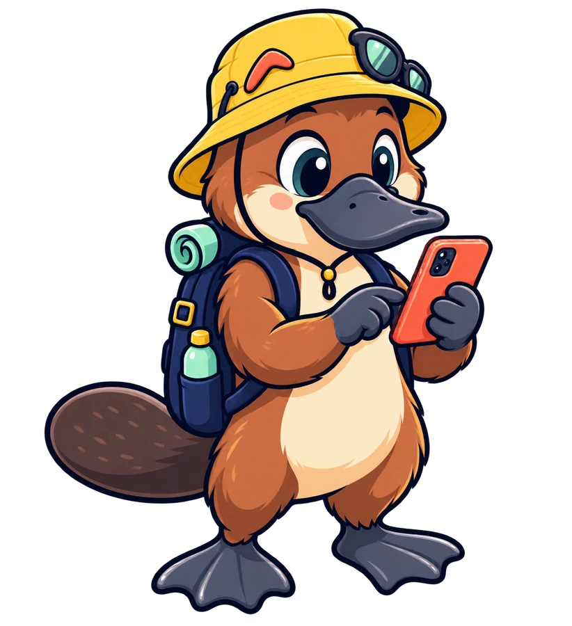
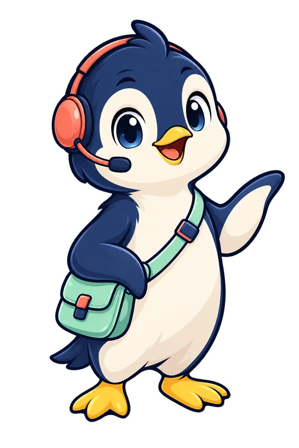
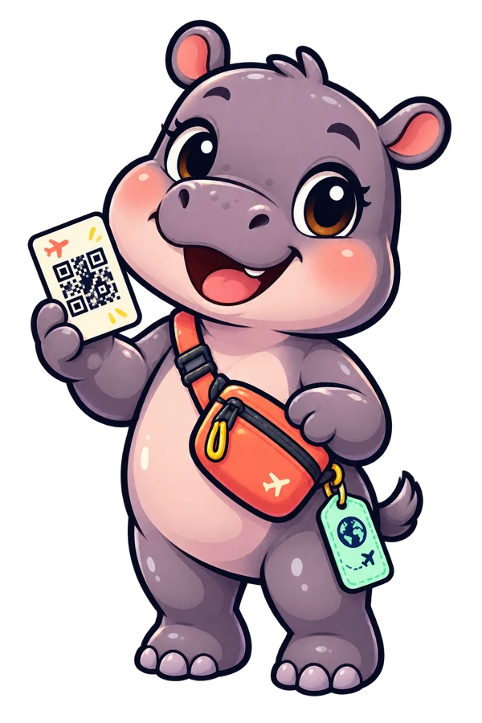

Omi
Main guide. Calm welcome and important confirmations.
Brand system
The characters now share a bright sticker-style drawing system. Product scenes are assembled from individual assets, so the crew can grow without repainting the whole website.
The koala-in-pin badge was retired because its shield shape resembled a park or tourism-authority emblem at small sizes. The new mark is an abstract O and travel dot. It remains separate from Omi, so the character can change pose without weakening the logo.
Main guide. Calm welcome and important confirmations.

Trip planner. Destination, timing and data-needs prompts.

Plan checker. Coverage and technical details.

Support buddy. Installation help and calm retry states.

Setup cheerleader. Payment complete and eSIM ready.

Recovery helper. Lost links, QR recovery and resend success.